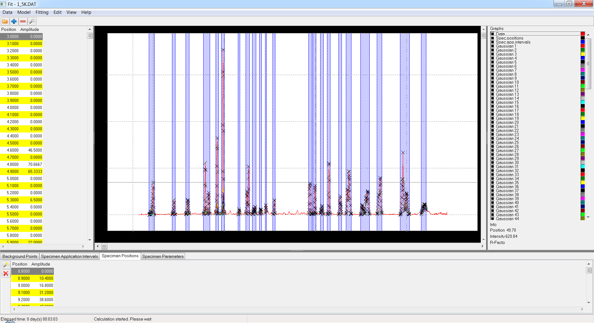

An interactive curve-fitting application. You load a data set, place curves on it, and the app fits them — one peak or a hundred, by hand or fully automatically.
Written in Free Pascal with Lazarus. It runs on Linux, Windows and macOS.
Download
Built by CI from the sources in this repository. On macOS, build it
yourself: one script produces Fit.app and installs it.
| Platform | Download |
|---|---|
| Linux (x86-64) | Fit-linux.tar.gz — portable archive |
| Debian, Ubuntu (x86-64) | Fit-linux.deb — sudo apt install ./Fit-linux.deb |
| Fedora, RHEL, openSUSE (x86-64) | Fit-linux.rpm — sudo dnf install ./Fit-linux.rpm |
| Windows (x86-64) | Fit-windows-setup.exe — installer |
| macOS (Apple Silicon, Intel) | ./scripts/build-app.ps1 -Task all -Install |
Each link above serves the latest release · all releases
Fit is two programs: the desktop client, which has no fitting engine of its
own, and the compute server it talks to over HTTP. Every installed Fit
starts the server itself — the Windows shortcut, the Linux
fit command and Fit.app all launch through a wrapper
that starts a server on port 8787 when nothing answers there, and reuses one
that does. The portable Linux archive is the exception: start
fit_server before the client.
Building from source covers the script, the macOS bundle and a Lazarus IDE walkthrough with exact versions.
Look how fully automated fitting works

Where it stands
| Capability | State | Detail |
|---|---|---|
| Curve types | Implemented | 13 registered, including user-defined formulas |
| Data loaders | Partial | 2 formats read (Diffraction profile, Price data, OHLC). 1 loader class declared but not registered — a stub that raises ENotImplemented. |
| Data export | Planned | No export at all yet |
| Compute backends | Implemented | Downhill Simplex (native), Levenberg-Marquardt (Python/lmfit). A remote fit_server is a transport choice of the native engine, not a separate engine. |
| Objectives | Implemented | 4, with curve-type compatibility derived from capabilities |
| REST API | Partial | 14 verbs. Not specified as OpenAPI yet, and deliberately not documented as a stable contract. |
| Module registration | Implemented | 10 seams; the framework ships no module |
| Argument axes | Implemented | Display-only: an axis never alters stored data or the fit |
| Charting component | Planned | Blocks per-point labels and point dragging |
| Scripting and batch runs | Planned | No way to drive a fit without the window |
| Parallel and GPU compute | Planned | Fit intervals are not run in parallel yet |
| Native installers and signing | Partial | Archives and .deb/.rpm are built; signing is off by default |
The full nine-stage plan, and what is settled and not up for reopening, is in the roadmap.
Using it
- Curve types
- User-defined curves — your own formula, no code
- Argument axes and units
- Loss functions — what “best fit” means here
- Compute backends — native, Python/lmfit, or a remote server
- Building from source
Extending it
Fit is a framework as much as an application. A new curve type, data loader, optimiser, objective, REST verb or whole analysis vertical is added by registration — a directory plus one entry on a project's unit search path. No framework file changes.
These pages are generated from the registries this build actually contains, every time the site is published:
- Architecture — the three processes, the client-to-server call chain, how a running fit reports progress, the view seam, all ten extension seams, and the anatomy of a module
- Extension points — one section per seam: what you write, where it goes in, and what is registered through it today
- Adding a curve type — the registration path, the curve classes, and curve types the user defines
- Adding a data loader
The prose that goes with them lives in the repository: writing a module · a complete working module in six files · AGENTS.md, the invariants, for AI agents working on the code.
Command line
| Option | Effect |
|---|---|
/INFILE=file_name | opens a data file at start-up |
/LOG_LEVEL=level | fatal, warning, notification, debug or trace — only ever turns the log down |
/WRITE_PARAMS_LOG | logs every variable parameter during a fit |
The client and the server keep separate logs —
fit_client.log and fit_server_log.txt — in
$HOME/Fit/ on Linux and macOS, or
C:\Users\<user>\AppData\Roaming\Fit\ on Windows. Each rotates at
32 MB, keeping one previous generation as <name>.1.
Test data
A sample data set ships inside every download, under Data/.
Separately: test_data.zip.
Contributing
This repository is published as a snapshot: each publication
replaces main with a single commit, so a pull request cannot be
merged directly. Open an issue or attach a patch — see
CONTRIBUTING.md.
GPLv3-or-later. Documentation CC BY 4.0.